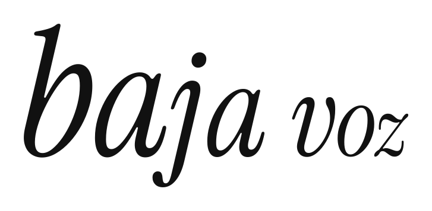

baja voz la lista
jue, 11:04
shhh. el próximo patio.

hola,
el próximo concierto es el 18 de septiembre, a las 20:00.
un patio del casco viejo. la dirección te llega la víspera.
cincuenta sillas. una guitarra. nada más.
quedan 12 sillas
- el móvil, en modo avión.
nos vemos. o mejor, nos oímos.
— baja voz